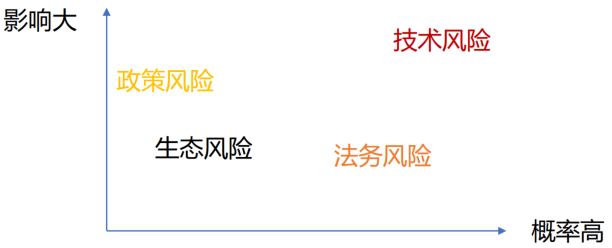

<!DOCTYPE html>
<html lang="en">
  <head>
    <meta charset="utf-8" />
    <meta name="viewport" content="width=device-width, initial-scale=1.0, maximum-scale=1.0, user-scalable=no" />

    <title>reveal-md</title>
    <link rel="shortcut icon" href="./favicon.ico" />
    <link rel="stylesheet" href="./dist/reset.css" />
    <link rel="stylesheet" href="./dist/reveal.css" />
    <link rel="stylesheet" href="./dist/theme/black.css" id="theme" />
    <link rel="stylesheet" href="./css/highlight/base16/zenburn.css" />


  </head>
  <body>
    <div class="reveal">
      <div class="slides"><section  data-markdown><script type="text/template"># 企业使用开源与供应链风险

## 如何研究开源供应链风险？

* 技术性风险
    * 代码bug
    * 安全漏洞
    * 恶意软件投毒
    * 网络阻断
* 法务风险
    * 未按照规律履行合规义务，导致诉讼风险
    * 开源软件修改License，开源转闭源
* 生态风险
    * 社区消亡，无人维护
    * 无法参与上游贡献
* 政策风险
    * 平台限制使用
    * 软件排除特定用户

</script></section><section  data-markdown><script type="text/template">
## 如何评估开源供应链风险


</script></section><section  data-markdown><script type="text/template">
## 如何应对开源供应链风险



* 风险排序： 技术风险 > 法务风险 > 政策风险 > 生态风险
* 区分企业投入还是社会投入
    * 企业投入：技术风险、法务风险
    * 社会投入：政策风险、生态风险
* 区分市场机制与公共能力
    * 市场机制：建设有利可图的服务
    * 公共服务：共建无利可图的服务</script></section></div>
    </div>

    <script src="./dist/reveal.js"></script>

    <script src="./plugin/markdown/markdown.js"></script>
    <script src="./plugin/highlight/highlight.js"></script>
    <script src="./plugin/zoom/zoom.js"></script>
    <script src="./plugin/notes/notes.js"></script>
    <script src="./plugin/math/math.js"></script>
    <script>
      function extend() {
        var target = {};
        for (var i = 0; i < arguments.length; i++) {
          var source = arguments[i];
          for (var key in source) {
            if (source.hasOwnProperty(key)) {
              target[key] = source[key];
            }
          }
        }
        return target;
      }

      // default options to init reveal.js
      var defaultOptions = {
        controls: true,
        progress: true,
        history: true,
        center: true,
        transition: 'default', // none/fade/slide/convex/concave/zoom
        plugins: [
          RevealMarkdown,
          RevealHighlight,
          RevealZoom,
          RevealNotes,
          RevealMath
        ]
      };

      // options from URL query string
      var queryOptions = Reveal().getQueryHash() || {};

      var options = extend(defaultOptions, {}, queryOptions);
    </script>


    <script>
      Reveal.initialize(options);
    </script>
  </body>
</html>
